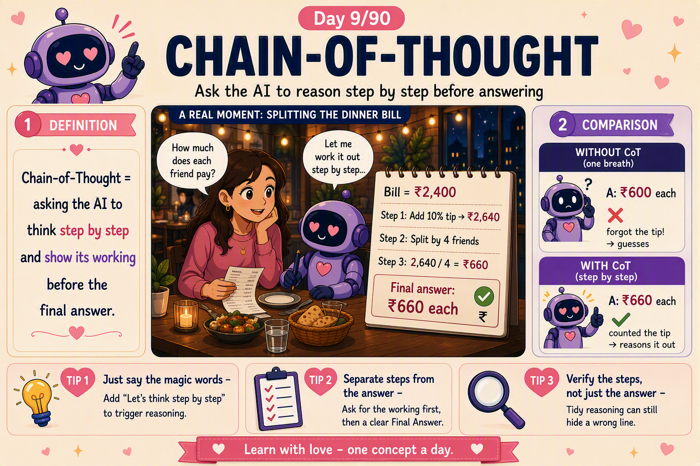

📜 The 30-second brief
Chain-of-Thought (CoT) prompting is asking the model to reason step by step — to "think out loud" and show its working — before giving the final answer. Instead of leaping straight to a conclusion, it lays out the intermediate steps, the same way you'd work out a dinner bill on a napkin rather than blurting a number.
Here is the mindset shift: a language model generates one token at a time, and each token it writes becomes context for the next. So when it writes out the reasoning, those written steps actually help it compute the answer — thinking on paper, not just in its head. The magic phrase is often as simple as "Let's think step by step."
💌 A fresh analogy: splitting the dinner bill
You're at dinner with friends and someone asks, "How much does each of us pay?" Answer in one breath and it's easy to slip — "₹2,400 split four ways… ₹600 each!" — and quietly forget the tip. But work it on a napkin and it's foolproof: bill ₹2,400, add 10% tip → ₹2,640, divide by 4 → ₹660 each. Same maths, same brain — but writing the steps caught the mistake the quick guess missed.
Chain-of-Thought is that napkin for an AI. Force it to answer in one breath and it guesses. Let it lay out the steps and it carries information forward, catches its own slips, and lands the right result far more reliably.
The lesson: reasoning is a process, not a reflex. Give the model room to work, and it works better.
⚙️ Why chain-of-thought works (the mechanism)
- Tokens become working memory. Each reasoning step the model writes is fed back in as context, so it literally "remembers" its own steps while solving.
- It breaks big problems into small ones. Multi-step questions become a sequence of easy sub-steps, each far more likely to be correct.
- More compute per answer. Generating more tokens means more processing before committing — the model effectively "thinks longer" on hard problems.
- Errors become visible. When the logic is on the page, a wrong step is easy to spot and correct — for you and for the model.
- It mirrors training data. Worked solutions appear all over the internet, so "show your steps" nudges the model into a pattern it has seen done well many times.
🧩 Flavours of chain-of-thought
| Style | What it looks like |
|---|---|
| Zero-shot CoT | Just add "Let's think step by step" — no examples needed. |
| Few-shot CoT | Show a couple of examples that include the reasoning, then ask the real question. |
| Self-consistency | Generate several reasoning paths and take the most common answer — a vote. |
| Least-to-most | Break a hard problem into ordered sub-problems and solve them in sequence. |
The everyday hero is zero-shot CoT — five extra words that noticeably lift accuracy on maths, logic, and multi-step reasoning tasks.
💡 Why it matters (and where it shines)
- Maths & logic. Word problems, calculations, and puzzles where one skipped step wrecks the answer.
- Multi-step decisions. "Given these constraints, what should we do?" — reasoning makes the trade-offs explicit.
- Transparency & trust. You can see how the model reached its answer, so you can check the logic, not just the conclusion.
- Debugging prompts. When an answer is wrong, the visible steps show you exactly where the reasoning broke.
- It powers "reasoning models." The step-by-step idea is the seed behind today's advanced reasoning systems.
🏭 Real-world example: the capacity planning question
An SRE asks: "Each server handles 4,000 requests/min. We expect 26,000 requests/min at peak and want one server spare for safety. How many servers?" Answered in one breath, the model blurts "6 servers" — close, but wrong.
Add "Think step by step" and it reasons: 26,000 ÷ 4,000 = 6.5 → round up to 7 servers to cover peak → add 1 spare → 8 servers. The steps caught the rounding and the spare the quick answer skipped. Same model, same question — the visible reasoning turned a confident miss into a correct, checkable answer.
🛡️ How to use chain-of-thought well (practical toolkit)
- Ask for it explicitly. "Let's think step by step" or "Show your reasoning before the final answer" is often all it takes.
- Separate reasoning from the answer. Ask for the steps first, then a clearly labelled "Final answer:" so it's easy to read.
- Use it for the right tasks. Reasoning, maths, and logic benefit most; simple lookups or lists don't need it.
- Combine with few-shot. Show examples that include the working for the biggest accuracy boost on hard problems.
- Vote for reliability. For critical answers, run it a few times (self-consistency) and take the majority result.
- Verify the steps, not just the answer. Plausible reasoning can still contain a wrong line — read the logic.
⚠️ Common misconceptions
- "The steps prove it's correct." No — a model can write confident, tidy reasoning that still ends in a wrong answer.
- "It shows how the AI really thinks." No — the written steps are a helpful narrative, not a literal readout of its internals.
- "Use it for everything." No — for simple tasks it just wastes tokens and slows things down.
- "CoT removes hallucination." No — it reduces reasoning errors, but the model can still invent facts along the way (Note 6).
- "Longer reasoning is always better." No — rambling can introduce new mistakes; clear and correct beats long.
🎓 Quick self-test (exam-style)
- What is chain-of-thought prompting?
Asking the model to reason step by step and show its working before the final answer. - Why does it work?
Each written step becomes context, giving the model working memory and more compute to reach the answer. - What's the simplest way to trigger it?
Add "Let's think step by step" (zero-shot CoT). - What is self-consistency?
Generating several reasoning paths and taking the majority-vote answer. - When should you not use it?
For simple lookups or lists — it just wastes tokens. - Do the steps guarantee a correct answer?
No — reasoning can look sound but still end wrong; verify it.
📚 Key terms to carry forward
- Chain-of-Thought (CoT) — prompting the model to reason step by step.
- Zero-shot CoT — triggering reasoning with a phrase like "think step by step," no examples.
- Few-shot CoT — examples that include the reasoning, not just the answer.
- Self-consistency — majority vote across multiple reasoning paths.
- Reasoning model — a model built to do extended step-by-step thinking (a later note).
- Intermediate steps — the visible working the model produces before its final answer.
⚡ 60-second flashcard (last look before the exam)
| Define it in one breath | Asking the AI to reason step by step before answering. |
| The mental model | Splitting a dinner bill on a napkin — writing the steps catches the forgotten tip. |
| Why it works | Each written step becomes context — working memory plus more compute. |
| Magic phrase | "Let's think step by step" (zero-shot CoT). |
| Flavours | Zero-shot · Few-shot · Self-consistency · Least-to-most. |
| Best for | Maths, logic, multi-step decisions — not simple lookups. |
| Bonus win | Transparency — you can check the logic, not just the answer. |
| Watch out | Tidy reasoning can still be wrong — verify the steps. |
| Golden rule | Give the model room to work, and it works better. |
| Connects to | The seed behind today's reasoning models. |
🖼️ Today's cheat sheet
The same image shared on the LinkedIn post for Note 9.

✨ Next spark
If chain-of-thought teaches the model to think before it answers, the next question is: what if it could look things up while it reasons? Note 10 begins the journey toward giving AI a memory it can search — the foundation of everything in Chapter Two. 💕